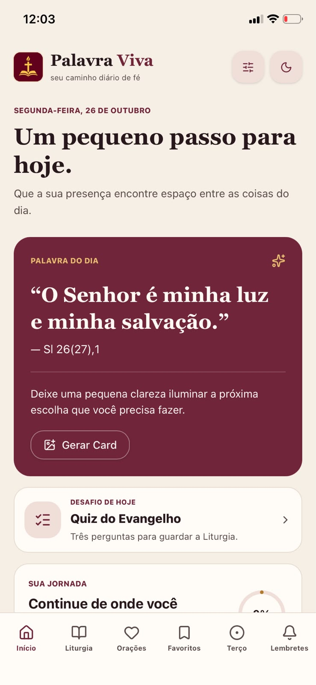
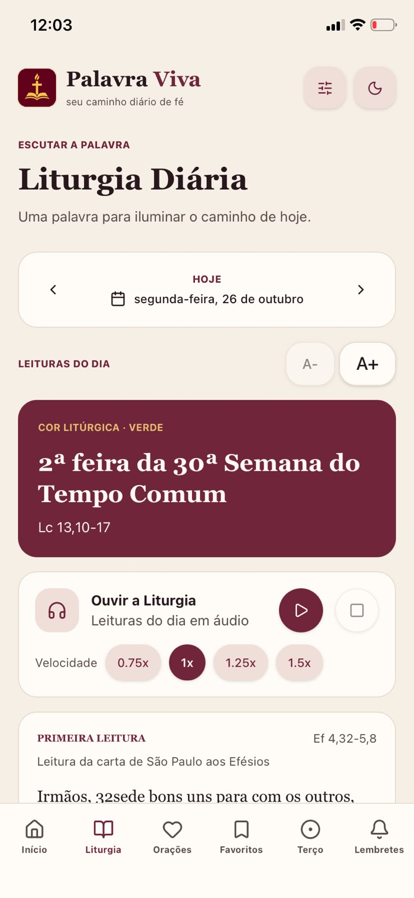
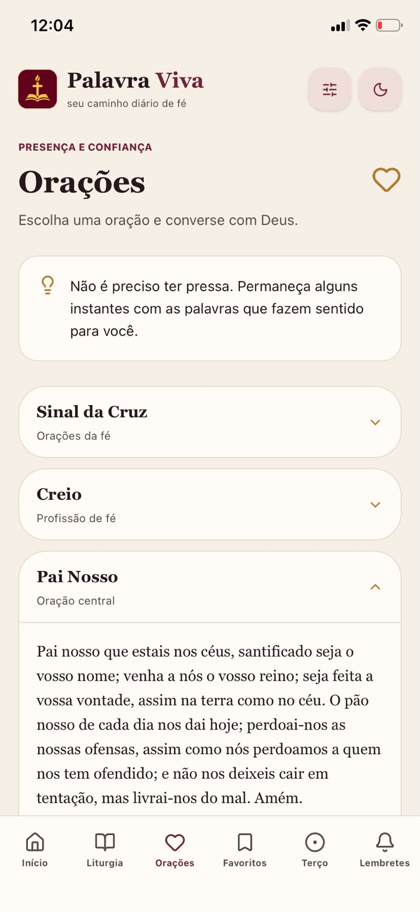
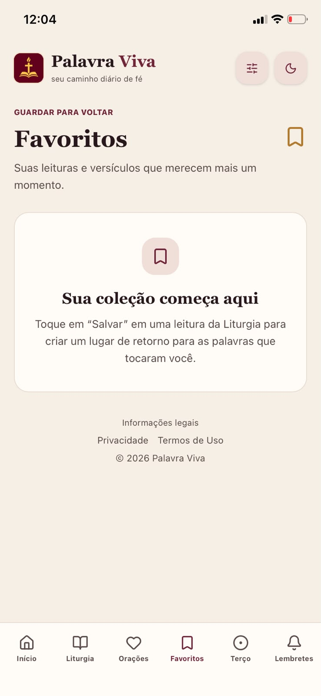
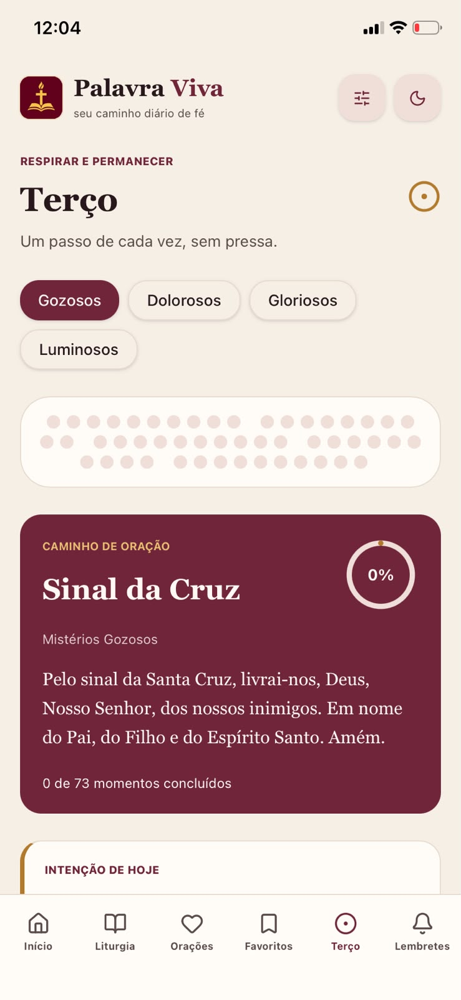
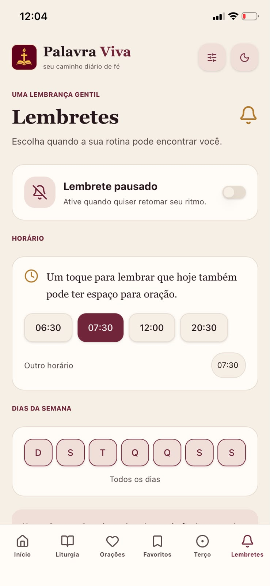

Acesse a Liturgia Diária com áudio, orações, Santo Terço guiado e lembretes para cultivar momentos de silêncio e presença com Deus no seu ritmo.






Recursos projetados com carinho para fortalecer a sua fé diariamente.
Acompanhe as leituras do dia, o evangelho e escute a narração em áudio para rezar onde estiver.
Acompanhe os mistérios diários e o progresso da sua oração com contador de contas em tempo real.
Defina os horários e dias que melhor se adaptam à sua rotina para pausar e se conectar com Deus.
Adicione o Palavra Viva diretamente na tela do seu celular para abri-lo com um toque, como um app nativo.
Siga estes 3 passos simples no seu navegador Chrome:
Acesse palavra-viva-drab.vercel.app pelo Chrome do seu celular.
Toque nos três pontinhos (⋮) no canto superior direito.
Selecione "Adicionar à tela inicial" ou "Instalar aplicativo".
Acesse agora pelo navegador e comece a usufruir de todas as orações e leituras.
Acessar o Palavra Viva Web App